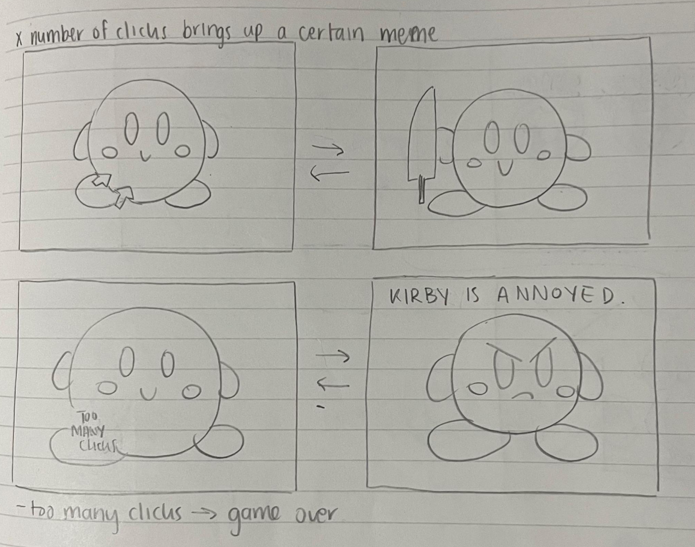
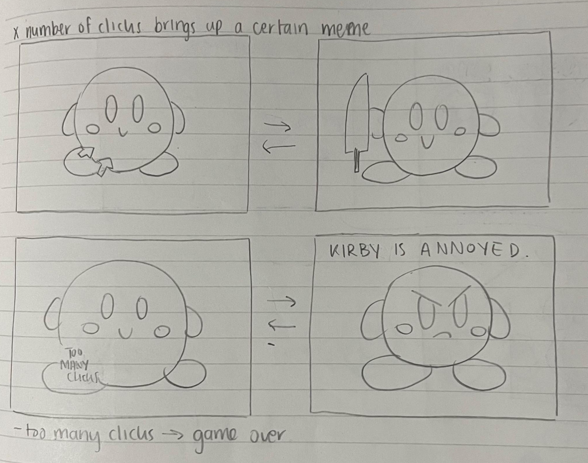
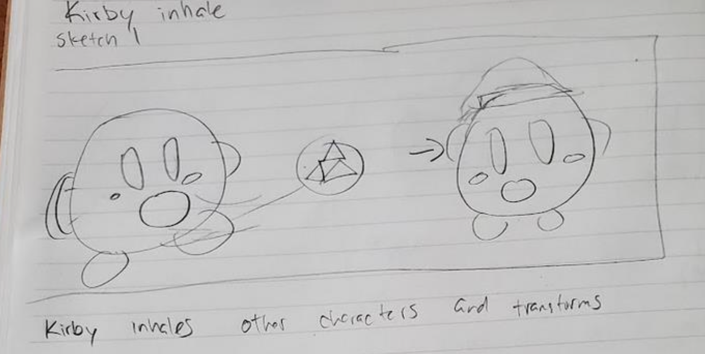
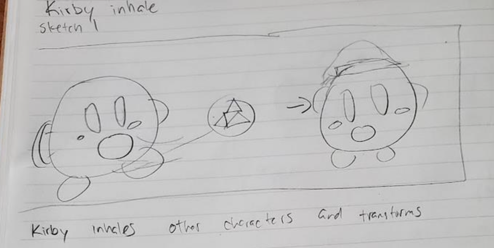

0. Introduction

1. Brainstorming
We began our project by brainstorming ideas and concepts we wanted our button to be based on. After sharing our ideas with each other, we decided to proceed with my idea of a Kirby button. We chose him because he is a popular character from Nintendo, an international leader in the interactive entertainment industry, with many likeable and memorable characteristics. He's pink, round, and cute, so what's not to like? He is also a hyperactive character with numerous movesets and facial expressions, therefore, we were confident that we'd be able to produce a high quality button with unique interactions if Kirby is the main character. Here are my initial notes on this idea:Kirby Button
- a. Different Kirbies: ice Kirby, sleeping Kirby, fire Kirby, etc.
- Kirby state could change every 10-15 seconds or so
- Event that's triggered will depend on which Kirby type you click on
- E.g. if sleeping Kirby is clicked, Kirby wakes up startled
- Could also explore other Smash Bros characters
- b. M tomato as the button
- Kirby is hurt/low health
- Press m tomato button → Kirby is healed
2. Ten Design Ideas
Each group member then had to sketch 10 initial design ideas centering on Kirby and his likeness to present to each other. After studying some of Nintendo's most popular games in the Kirby series, we realized that the young, pink hero was capable of a lot. He could cook, he could float through the air with an umbrella, he could even paint art. With the endless opportunities before us, I decided to just focus on what I liked the most about Kirby. I sketched him as the many entertaining memes of him I've seen online. I also highlighted his ability to eat his enemies and take their powers as his own. Some of us had ideas that were more reminiscent thanto a game concept because they would lead to either a positive or negative outcome depending on the choices of the user.


3. Ten Refined Sketches
Moving forward, we decided on three designs we would base our refinement sketches on. The sketch design ideas we chose as our top three were: 1. Random Kirby Meme Generator Button by Sophia
1. Random Kirby Meme Generator Button by Sophia 2. Alternate between Kirby's Copy Abilities Button by Sophia
2. Alternate between Kirby's Copy Abilities Button by Sophia 3. a) Feed Kirby Button Variation 1 by Marela
3. a) Feed Kirby Button Variation 1 by Marela
3. b) Feed Kirby Button Variation 2 by Marela
 3. c) Feed Kirby Button Variation 3 by Marela
3. c) Feed Kirby Button Variation 3 by Marela
We chose these three because we believed that we could expand these sketches to showcase Kirby's multi-faceted personality while uncovering what makes Kirby, well, Kirby. We knew that he loved to eat certain foods, he steals the abilities of his enemies by inhaling them, and that there are a myriad of Kirby memes that exist online. We did not move forward with the other initial design sketches because we did not believe that they captured Kirby's essence adequately. For example, we did not choose the "Kirby Paint and Canvas" sketch that I (Sophia) designed because we wanted to challenge ourselves by having just one singular button in our program instead of multiple. We also wanted our button to involve Kirby's famous "inhaling" and transformation ability, thus why we scrapped the "Kirby Paint and Canvas" idea. Here are the top 10 sketches we came up with based on the aforementioned three sketches:
 



 


- Chef Kirby button that drops a variety of items every time it is interacted with as inspired by "Refined Sketch 10 by Sophia"
- Traverse through collection of Kirby memes and display them as inspired by "Refined Sketch 5 by Daniel" and "Refined Sketch 8 by Sophia"
- Kirby walks towards items that he eventually reacts to as inspired by "Refined Sketch 8 by Sophia"
- Change background depending on Kirby's active power (e.g. ice, fire, sword) as inspired by "Refined Sketch 1 by Marela"
- Kirby inhales copy items, transforms, and gains the appropriate power (e.g. ice, fire, sword) as inspired by "Refined Sketch 7 by Daniel"
- Kirby inhales food and reacts to it via sound as inspired by "Refined Sketch 4 by Marela"
4. Final Product
Our final product was the result of three main ideas: Kirby eating food, Kirby stealing abilities, and Kirby being a meme. The technology we used to create our button are Vanilla JavaScript, HTML, and CSS. Our button works by clicking on Chef Kirby. If he is single clicked, a copy item will drop onto the grass platform and steadily move towards Kirby. Once Kirby is close enough, he'll inhale the copy item and absorb its powers. If Chef Kirby is double clicked, he'll drop a meme tomato and a random Kirby meme will appear on the magic mirror once Kirby inhales it. Lastly, if the mouse is held down over Chef Kirby, he will cook up a random dish for Kirby enjoy. Once Kirby eats the food, he will exclaim "Poyo!" to express his satisfaction. Our program also features an informative loading screen and a background music toggle button. Find out more by watching the video below:My contributions:
- Created graphics for magical meme mirror
- Coded logic for magical meme mirror
- Coded logic for scrolling grass platform
- Coded logic for handling single clicks on chef Kirby button
- Coded logic for handling collision between Kirby and an item
- Animated chef Kirby and meme mirror so that they appeared to be floating on clouds
- Coded background music toggle button
- Included "whoosh" sound each time button is pressed
- Included "thud" sound each time an item lands on the grass platform
- Included "inhale" sound each time Kirby inhales an item